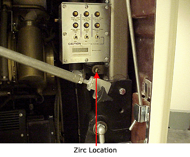
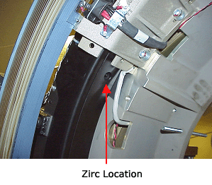
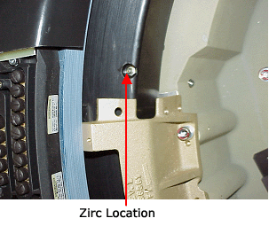

Operating Documentation
Direction 5112972-800, Rev# 2
CT Planned Maintenance Procedures
Operating Documentation |
| Required Persons | Preliminary Reqs | Procedure | Finalization |
|---|---|---|---|
| 1 | Timing Not Applicable | 10 mins | Timing Not Applicable |
Procedure Effectivity:
| Assembly: | GANTRY |
| Subassembly: | Main Bearing |
| Purpose: | Grease Main Bearing |
| Last Revised: | 01/24/05 |
| NOTE: | Bearings (Kaydon or Rotek) should be greased every 2,000,000 revolutions, using 8CC of Polyrex. |
| NOTE: | Use only Polyrex (2347076). |
| Item | Qty | Effectivity | Part# | Manufacturer | |
|---|---|---|---|---|---|
| Grease gun | - | 46-297931P1 | - | ||
| Standard FE Toolkit | 1 | - | - | - | |
| Item | Qty | Effectivity | Part# | Manufacturer |
|---|---|---|---|---|
| Polyrex | - | 2347076 | - |
| ELECTROCUTION HAZARD. | |
| HIGH VOLTAGE PRESENT. | |
| use proper lockout/tagout procedures before servicing equipment. |
| Do Not Over-Grease the Bearing. | |
| Follow ALL required safety and PPE procedures customary for your organization, when working on this product. | |
| Condition | Reference | Eff |
|---|---|---|
Only trained service personnel should service the GE CT Scanner. | - | - |
Position table to the lowest elevation.
| ELECTROCUTION HAZARD. | |
| HIGH VOLTAGE PRESENT. | |
| use proper lockout/tagout procedures before servicing equipment. |
Turn off the facility power to PDU.
Remove and set aside both the gantry side covers.
Turn off all the three switches on the status control box on right side of the Gantry.
Remove and set aside the Gantry scan window.
Remove the covers (front for QX/I or top and rear covers for H2/H3).
Grease fitting has multiple locations for different gantries.
QX/I fitting is located at the upper right-hand corner of gantry (above pivot sector/ below gantry revolutions counter) (see Illustration 1).
H2 and H3 grease fittings are located on stationary bearing either on inside facing or rear facing (see Illustration 2 and Illustration 3).
Rotate gantry by hand to find fitting in cases where fitting location may be hidden by slip ring brackets.
Illustration 1: QXi Zirc Location

Illustration 2: Plus Zirc Locations

Illustration 3: Ultra Zirc Location

Gantry should be rotating at approximately 10 seconds/revolution while the grease is being added (rotate gantry manually). In cases where fitting is located on rear facing of bearing, continuous greasing while rotating gantry will not be possible as the slip ring brackets will interfere with the grease tube. Removal and reinsertion of tube will be necessary during process to ensure even grease distribution.
| NOTE: | Grease gun 46-297931P1 delivers approximately 1CC of grease per pump. |
Use only 8CC of grease. DO NOT OVERGREASE.
No finalization required.